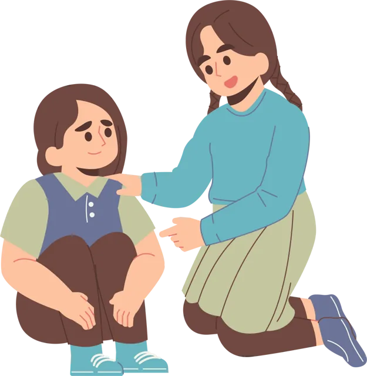
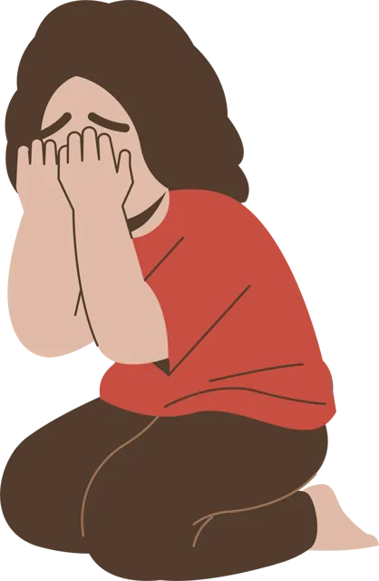

114 學年度友善校園暨反霸凌宣導。讀五個流星國小的案例，全班一起投票、討論：這樣算不算霸凌？
公埔國小學務處 生教訓育組長 張奕軒老師
『霸凌』是……點一下卡片，複習四個重點。等一下的案例，就用這四點來判斷！


流星國小的小艾性格內向，不太與同學交流，班上的小振會故意模仿她說話，還會故意阻擋他的去路。
小艾感覺到很困擾，但又不敢說什麼，他擔心小振會更針對他……
小振持續用這種「開玩笑」的方式對待小艾，甚至開始嘲笑她的外表及成績，小艾越來越不安，成績慢慢下滑，開始害怕上學，晚上還會睡不著、作惡夢。
小艾鼓起勇氣向老師報告，但小振卻說這只是在「開玩笑」。
流星國小的小可跟小文是同班同學，有一次活動他們被分在同一組，活動時，小可非常認真進行活動，小文卻一直不專心在聊天。小可對小文的合作態度非常不滿，便決定以後不要再跟他同組，也不要再跟他有任何互動。
之後有任何活動，小可便會避免跟小文同組。
漸漸的小文發現小可不主動跟他說話，分組時也不再跟他一組，他覺得自己被排擠了，便向老師報告自己被霸凌了。
流星國小的阿霖在 instagram 上發了自己的自拍，同班的阿輝在下面留言：「那麼醜還敢自拍！」，這則留言迅速引起大家跟風，很快出現了許多負面評論，如：「長這樣我才不敢出門」、「這麼醜不要到外面嚇人」等言論。
起初，阿霖試圖忽視這些言論，但留言持續增加，甚至有人拿他的自拍照惡搞，在校園內也有人直接說他醜。
接著，阿霖在學校內總是低著頭，變得越來越沉默，也不再參與班級活動，班導師發現後主動關心阿霖，發現阿霖可能受到「霸凌」。
流星國小的小樂安靜內向，平時穿著樸素，衣服總看起來舊舊的。某天，阿正注意到小樂的外表，對其他人說：「你們有沒有發現，小樂頭髮油油的，像沒有洗頭，身體也臭臭的。」其他人馬上附和：「他嘴巴好像也有口臭。」、「他書包也有怪味道，該不會沒洗衣服吧！」
後來，同學經過小樂的座位時會故意摀住鼻子，甚至在小樂背後竊竊私語：「不要靠他太近，會被他傳染！」
小樂感到孤立，便向老師報告，阿正卻說：「我只是說出事實，他身上的確有味道，說實話難道也不行嗎？」
流星國小的小野成績非常好，人緣也很好，受到大家的歡迎；同班的小君每次都考輸小野，便心生嫉妒。
有天，小君下課時跟同學說：「昨天我夢到一個人，他看起來很乖，成績也很好，但其實他私底下會做很多不好的事，甚至會偷偷抽菸。」其他同學起鬨問是誰，小君卻說：「我沒說是誰，別對號入座喔！」
小君影射越來越頻繁，雖然沒有指名道姓，但大家都猜測是小野，常常對著他竊竊私語，小野感到很有壓力，但小君卻一直強調自己是夢到的，並沒有在說誰。
我做得到（點一下打勾）：